PaiSmart 迁移补齐前端技术复验
日期：2026-10-03。范围：若依管理端 PaiSmart 业务页面、组件及协议适配。最终源码采用共享认证、请求工具、授权菜单和按钮权限。
本报告是技术证据：浏览器只访问127.0.0.1的明确测试响应，无真实后台代理、登录、数据库、模型、OCR、支付或Kafka。没有执行或增加31项真实业务验收通过数，用户接受尚未记录。
本轮最终检查：引用反馈、检索范围和本人主空间
最后源码类型检查exit 0；10个文件72项通过0失败，新增12项边界。从最后引用CSS源码构建exit 0，49.91秒，独立产物2026-10-03-引用主空间检索-含最终引用布局构建产物，未覆盖共享dist。会话最终稳定session为0运行错误、1条Element Plus分页small弃用警告；所有网络仅127.0.0.1本地静态资源。
本轮7张当前截图，前版18张完整保留为历史/沿用基线。旧会话甲乙图已受新增核验标记影响，不作为当前引用UI证明；其余16图对应场景与本轮三处改变无关，本轮未重新执行。前版60项及18图原文保存于HTML快照与JSON快照，未提交原文与哈希清单。
本轮只用明确Mock响应，未执行真实登录、菜单、数据库、模型、OCR、支付或Kafka。31项真实业务仍0执行、0新增通过，用户接受未记录。本HTML增补仅作静态文件核对，前版HTML浏览器呈现不能证明此增补版。
操作前已保存的本地技术清单
| 中文业务点 | 实际步骤 | 预期 |
|---|
| 回答、历史和右栏核验反馈 | 点击会话甲，核对回答引用和右侧列表，再切换会话乙 | 两处可疑引用都显示待核实及理由；未知显示未核验；旧会话引用移除 |
| 本人主空间 | 进入知识空间；将空间乙设为主空间 | 先显示空间甲，再PUT后GET me回读空间乙；无真实业务写入 |
| 跨空间检索和失败清空 | 甲检索；关闭改乙；重开核对空态；乙检索；输入失败再检索 | 切换空间查询和旧结果清空；请求使用乙id；新失败不留旧结果 |
会话甲核验反馈（本轮Mock技术复验）
点击甲会话读取历史回答；回答引用和右栏分别显示可疑引用“待核实”及实际理由，缺核验字段“未核验”，兼容verified=true“已核验”。右栏内部块布局已补拍回读。
http://127.0.0.1:18152/
实际保存并回读；SHA-256：5a96b655754e779ef84d4f0ee43252e537521999705e3b66ca659a5b0df8ebcb。本轮最后CSS稳定新session操作并回读
会话乙核验反馈（本轮Mock技术复验）
实际切换到乙会话，回答与右栏核验标记和理由同步更新；没有甲引用残留。此图覆盖本轮当前引用UI，旧甲乙图仅作历史。
http://127.0.0.1:18152/
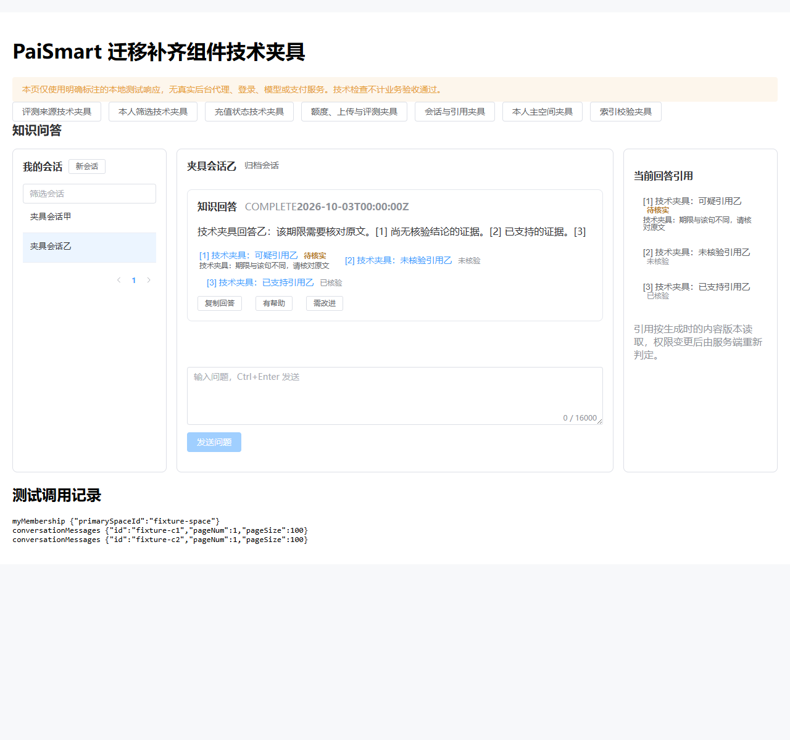
实际保存并回读；SHA-256：a34ca729239315da46fec1e6d8ff851ef842751440bc5dda105fc08a5041cc84。本轮最后CSS稳定新session操作并回读
本人主空间初始（本轮Mock技术复验）
普通用户组件从本人me读取primarySpaceId，显示技术夹具空间甲，不以空字段或余额假定主空间。
http://127.0.0.1:18152/paismart/spaces
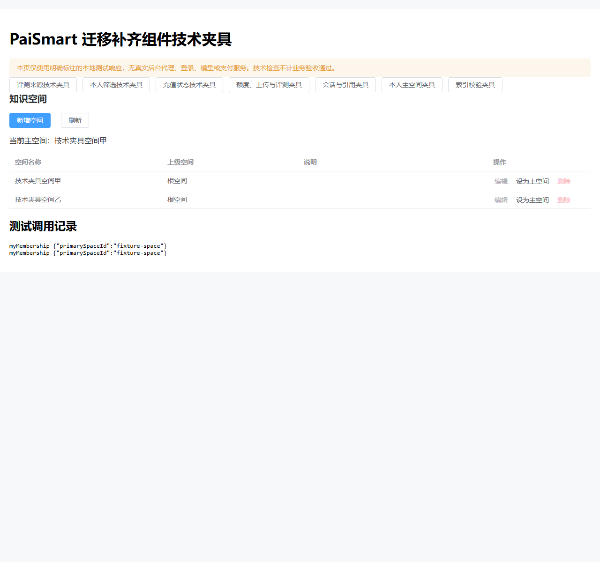
实际保存并回读；SHA-256：cf2c5539b4e907be6c0933cf8217d6169914c76cd05b7b37c064c4e085e100b5。本轮实际Mock操作并回读；最后仅右侧引用CSS改变，不影响此组件
本人主空间更新回读（本轮Mock技术复验）
点击乙的“设为主空间”，本地PUT记录fixture-space-b；成功后再次GET本人信息，主空间显示乙。后端继续裁决资格和权限；未发真实写入。
http://127.0.0.1:18152/paismart/spaces
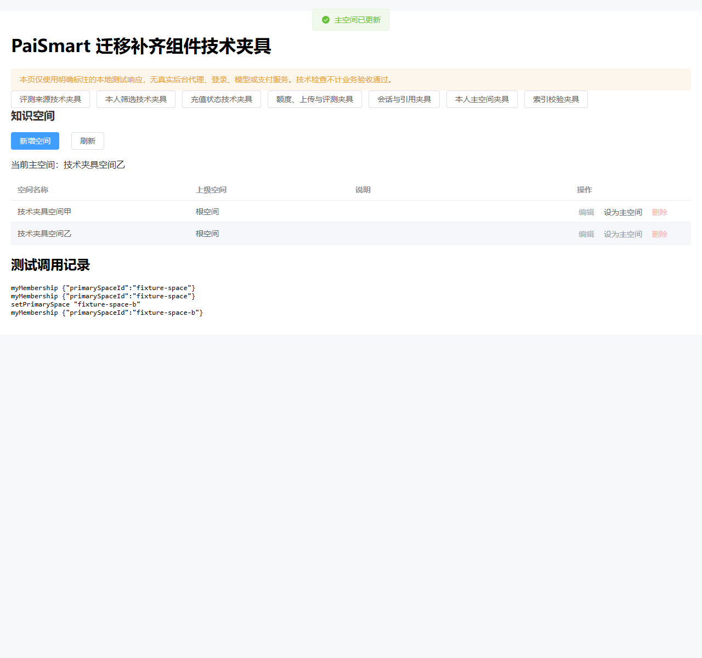
实际保存并回读；SHA-256：edea25d58f82646e57d1560d4cf5cb699a8316cf59b48034ab87e04f7ca594c3。本轮实际Mock操作并回读；最后仅右侧引用CSS改变，不影响此组件
甲空间检索结果（本轮Mock技术复验）
选甲空间后查询合同；Mock请求携带fixture-space，显示甲结果。截图已保存回读。
http://127.0.0.1:18152/paismart/documents
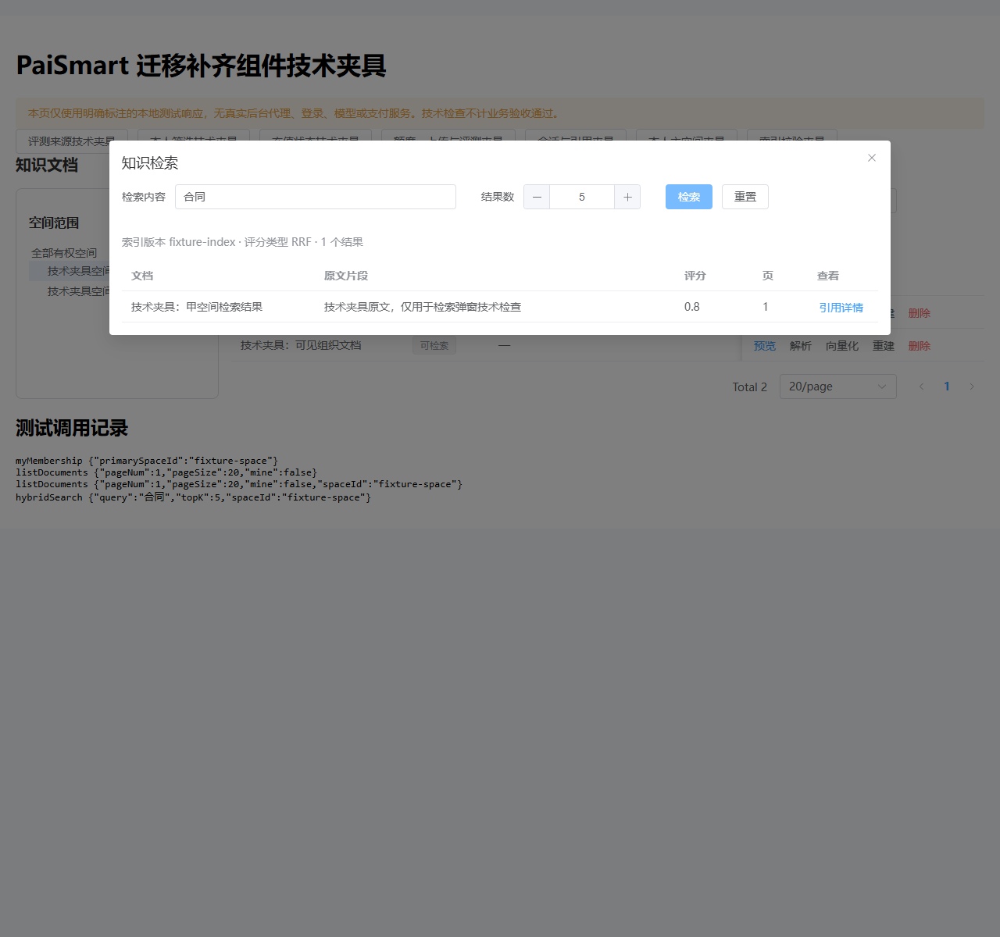
实际保存并回读；SHA-256：f041eac24fb83bd97b4aa33dc66c820d40359574f5a45351e218d395425e3a4a。本轮实际Mock操作并回读；最后仅右侧引用CSS改变，不影响此组件
乙空间重开清空（本轮Mock技术复验）
关闭甲检索，改选乙，再打开；检索词与甲结果都为空。旧请求取消/迟到响应边界由组件用例另行验证。
http://127.0.0.1:18152/paismart/documents
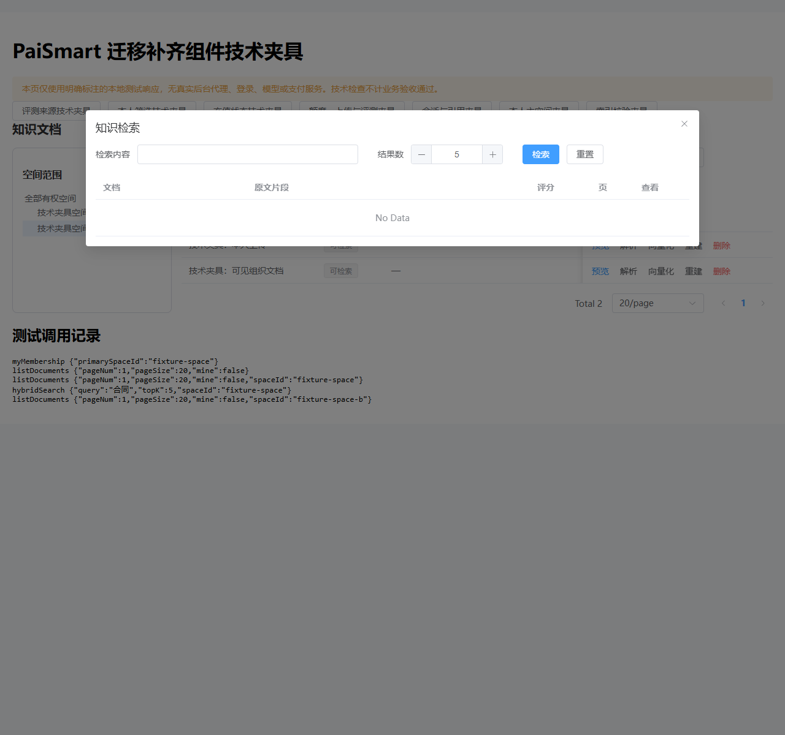
实际保存并回读；SHA-256：bb805df6e1ec02d7eae50bdeaacf445d5719b0a514d050c2d05d1d0c5b5056de。本轮实际Mock操作并回读；最后仅右侧引用CSS改变，不影响此组件
乙空间检索失败清空（本轮Mock技术复验）
乙空间检索成功后再输入失败；实际请求携带fixture-space-b，页面显示明确错误并清空旧结果，未呈现甲或乙旧成功结果。
http://127.0.0.1:18152/paismart/documents
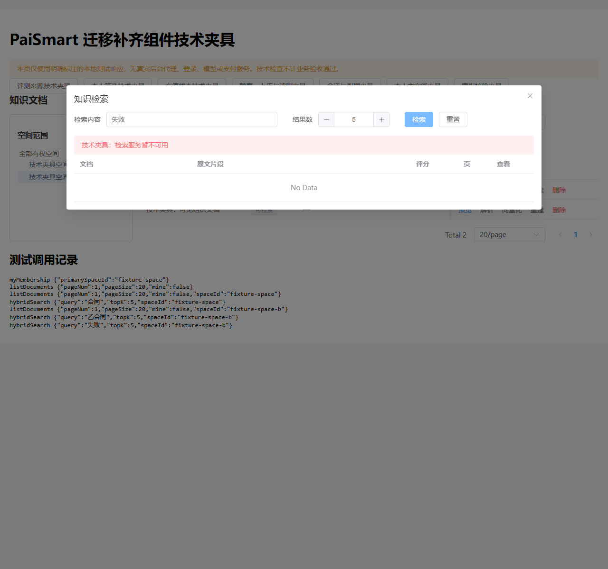
实际保存并回读；SHA-256：8f708f45b1b33035013edce549dcfcb67a22c4295c3f0c8bb5821f53744ac479。本轮实际Mock操作并回读；最后仅右侧引用CSS改变，不影响此组件
此前60项终版技术基线（历史）
最后源码包含短上传标签、CANCELED筛选和取消后的部分报告提示。以下结果均从最后源码重新执行，此前56项、59项及其构建作为中间证据保留。
| 检查 | 实际结果 | 范围 |
|---|
| 类型检查 | exit 0 | PaiSmart Vue/TypeScript |
| 组件与边界测试 | 9个文件，60项通过，0项失败 | 菜单静态兼容、mine传参、支付终态/待核对、受控三来源/seed/大小/输入幂等、长文件名短label、CANCELED筛选、部分报告 |
| 最终隔离构建 | exit 0，142.184秒 | 最终独立构建index.html；未覆盖共享dist或旧包，未发布 |
| 本地Mock浏览器 | 11张新增稳定截图已逐张回读；0运行错误、0警告 | 仅127.0.0.1:18152；菜单兼容为静态SQL与Mock路由检查，不是真实登录菜单联机。原7图按影响判断沿用。 |
保留原错配：修复前源路径与哈希；来源入口修改前原文索引。后续夹具定位失败和动画中截图亦保留，并未记为成功。
真实31项业务验收仍未执行，新增通过数0；无真实数据库、登录、模型、支付、Kafka或菜单写入。用户接受未记录。
支付失败终态（此前Mock技术基线）
先恢复REVOKED原单，随后筛选PAYERROR并选择该原单；筛选调用实际state=PAYERROR，扫码地址撤下，选择套餐按钮可用。没有创建真实订单。
http://127.0.0.1:18152/paismart/recharge?tradeNo=fixture-revoked
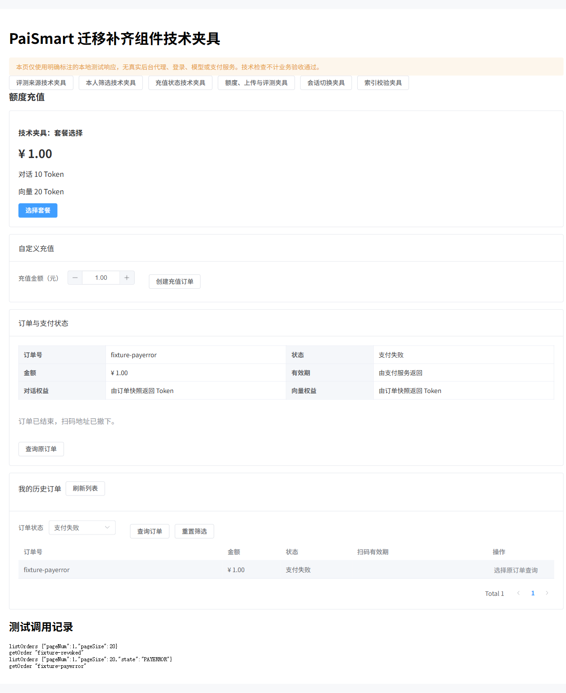
实际截图保存并回读；SHA-256：a6f4df728aac428ce03f87fe5719da626a93dbde62fae39e9c3839ce795626df。详细调用记录见JSON。
待核对保护（此前Mock技术基线）
筛选UNCERTAIN并选择原单，停止自动查单并保留交易号，选择套餐按钮禁用；没有重复预支付。
http://127.0.0.1:18152/paismart/recharge?tradeNo=fixture-revoked
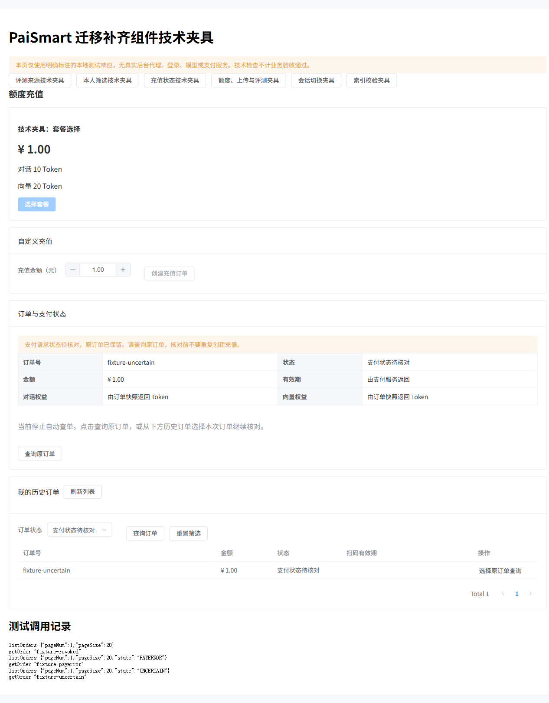
实际截图保存并回读；SHA-256：961de6e4dc0a3471be3202c19dc165859a0921a5c0a90ae40f41d0a70efc9c53。详细调用记录见JSON。
本人上传稳定页面（此前Mock技术基线）
勾选仅本人上传后请求mine=true、pageNum=1；本地表格仅剩本人文档。已等待加载层消失，修正仅属于测试夹具的全局main样式。
http://127.0.0.1:18152/paismart/documents
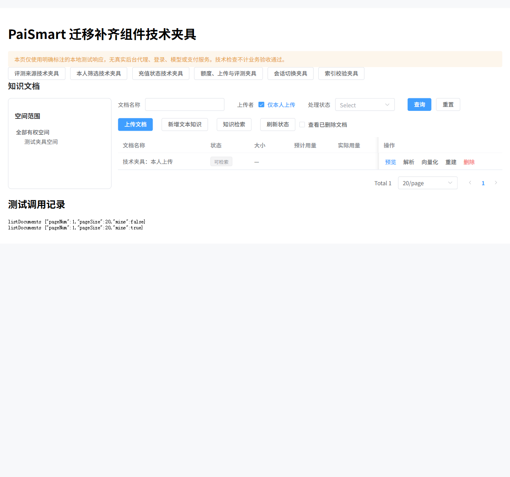
实际截图保存并回读；SHA-256：e9a579821419b1618988e27d07555b079c70ed6a99805375b4b3113d4c1c559d。详细调用记录见JSON。
非法seed拒绝（此前Mock技术基线）
在内联JSONL中输入1.5种子，提交被拒绝且没有createEvaluation调用；允许范围为安全整数。
http://127.0.0.1:18152/paismart/evaluations
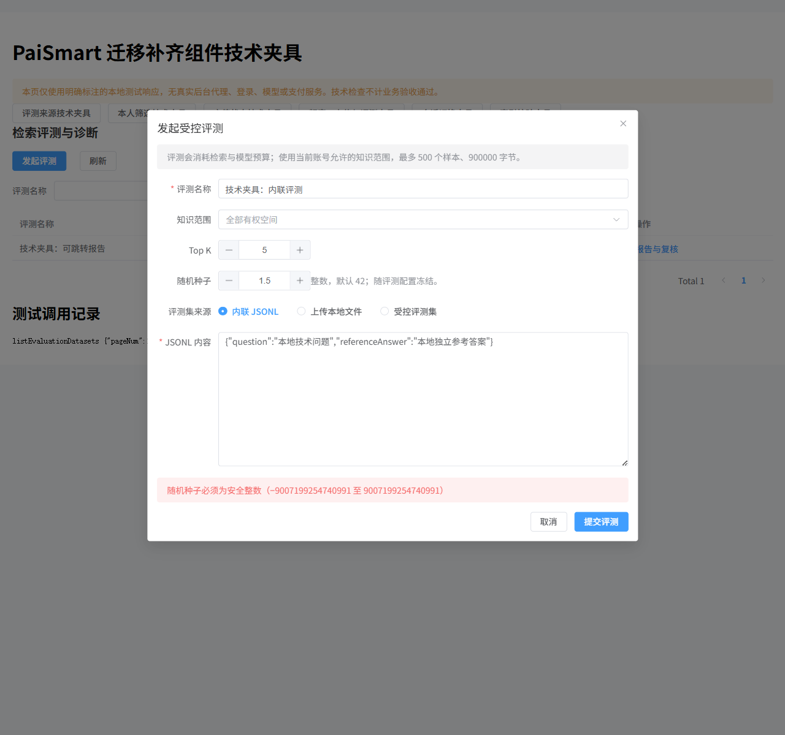
实际截图保存并回读；SHA-256：78109e7bdf56143dd937abdccee8c672d46ce33534ce2e27e7aeebcbd2b4c632。详细调用记录见JSON。
内联评测提交（此前Mock技术基线）
修改种子43提交，实际Mock调用包含inlineJsonl和seed，未传datasetId；关闭作业弹窗并等待动画结束后截图。
http://127.0.0.1:18152/paismart/evaluations
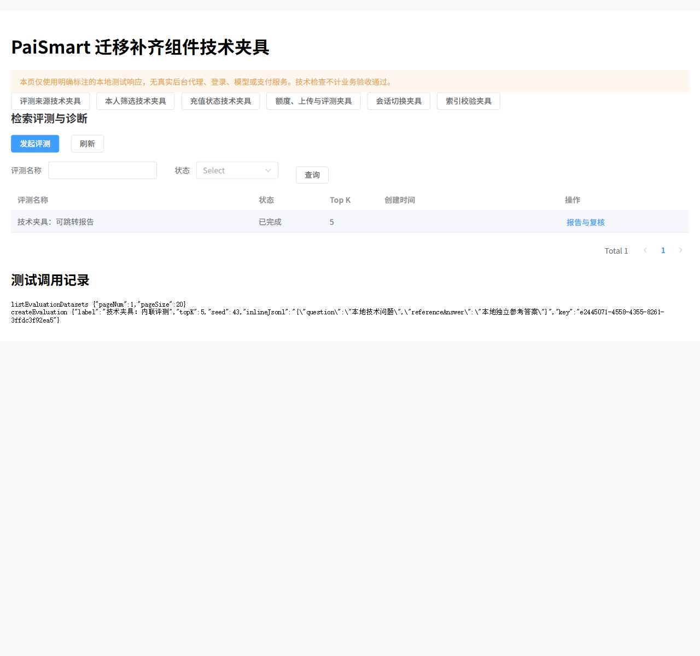
实际截图保存并回读；SHA-256：691446aad87a3be14a2cf40192bcdcf76bdd0a4f30fea6a2fbbe7b447b6453c0。详细调用记录见JSON。
文件保存短标签（此前Mock技术基线）
本地.jsonl保留原文件名，以已填评测名称作为短上传标签，显示服务返回的id、样本数与字节数；不会把合法长文件名直接作为超限label。超过160字符文件名由组件测试单独覆盖。
http://127.0.0.1:18152/paismart/evaluations
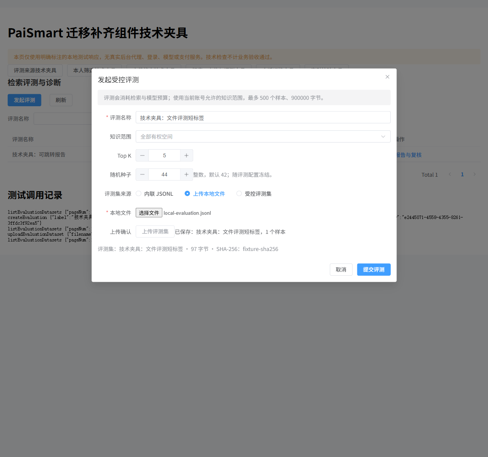
实际截图保存并回读；SHA-256：f641f25c709a35d64f4a59b134fdc486bd9b1210b312945e7f5ea2fbcfa3811d。详细调用记录见JSON。
文件datasetId提交（此前Mock技术基线）
上传保存后仅用服务返回fixture-upload-dataset和seed=44创建评测，未复制inline正文；调用记录为本地Mock。
http://127.0.0.1:18152/paismart/evaluations
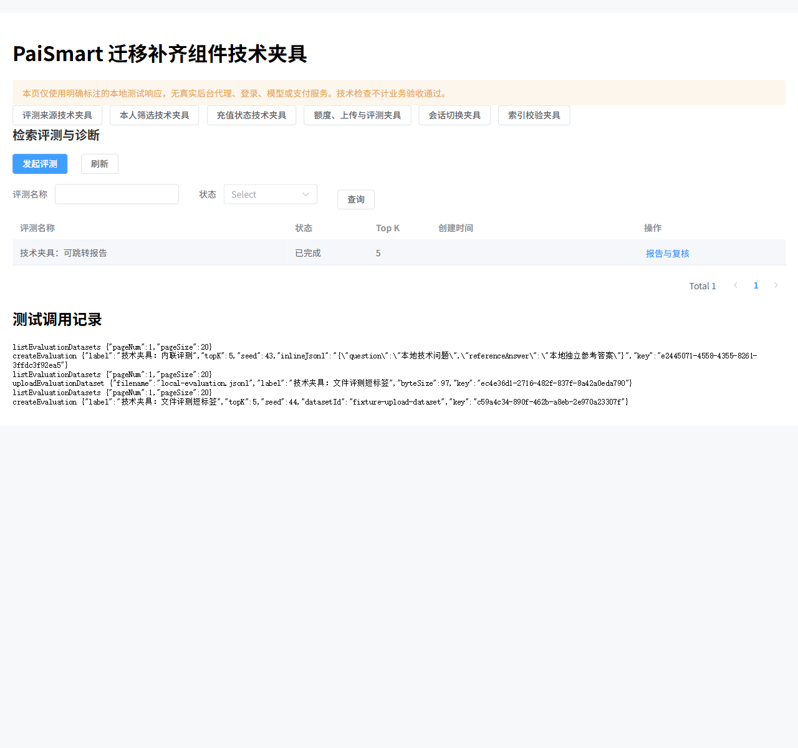
实际截图保存并回读；SHA-256：175a477b09b6495f37f1aca50dd386c3dee0cc568a74ed30b162eb9544e97abc。详细调用记录见JSON。
受控资源seed（此前Mock技术基线）
从实际Mock GET返回的列表选择受控资源并输入seed=42，不在页面捏造资源id；显示登记来源和样本数。
http://127.0.0.1:18152/paismart/evaluations
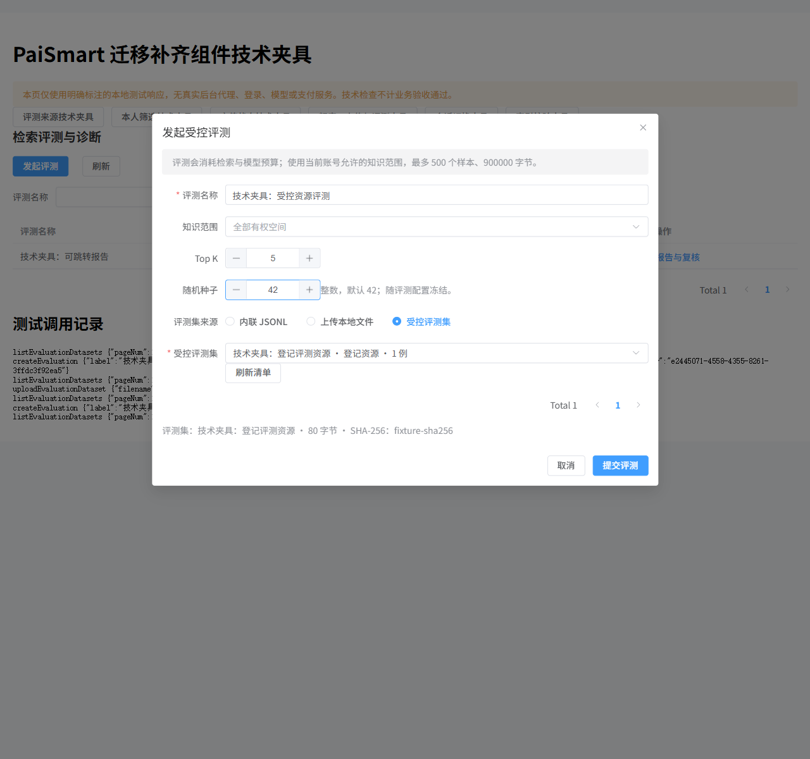
实际截图保存并回读；SHA-256：ce68baa4ee8666d2f87b37e601af8bd598b9ea32d95c4daf8b44f8c19e5e44ce。详细调用记录见JSON。
受控资源提交（此前Mock技术基线）
实际Mock提交使用列表返回builtin:fixture-resource与seed=42，没有path/url/objectKey输入。
http://127.0.0.1:18152/paismart/evaluations
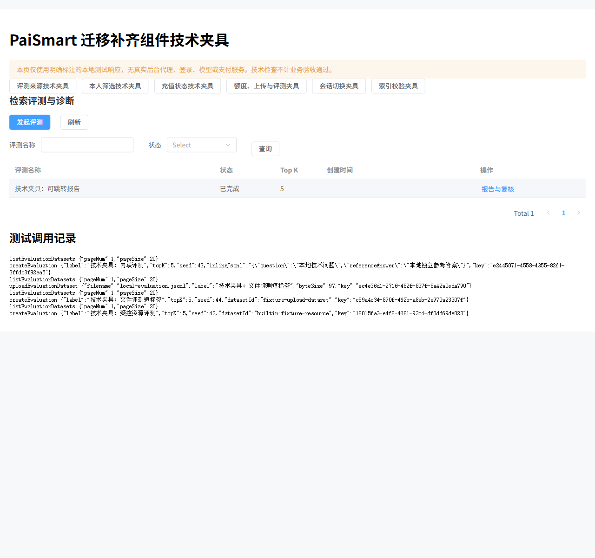
实际截图保存并回读；SHA-256：cbdb7e31a99d6c369f761927a50f6348977512266fec2986244300646c743a94。详细调用记录见JSON。
报告菜单跳转（此前Mock技术基线）
点击报告与复核后实际浏览器URL为/paismart/review?evaluationId=fixture-evaluation，与当前菜单SQL path一致；未执行真实菜单写入或登录联机。
http://127.0.0.1:18152/paismart/review?evaluationId=fixture-evaluation
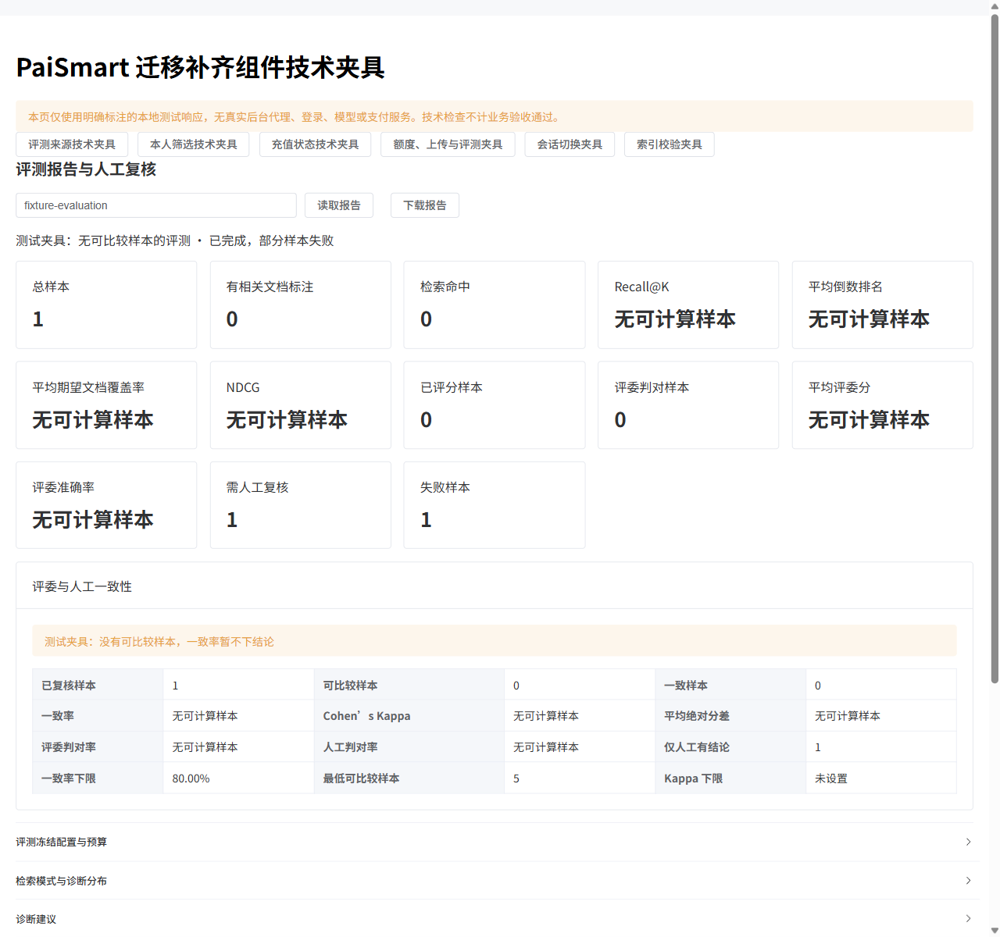
实际截图保存并回读；SHA-256：218a05b5d26812ca9a605fe4bc8727e108eff8ff986e5d4e5466c2bf87150a47。详细调用记录见JSON。
取消后的部分报告（此前Mock技术基线）
CANCELED、冻结总数3、完成1、待处理2均可见；已存案例保留，未可计算指标显示无可计算样本，没有以待处理当0%或失败。完整旧报告无这两个计数字段时不额外提示。
http://127.0.0.1:18152/paismart/review?evaluationId=fixture-partial
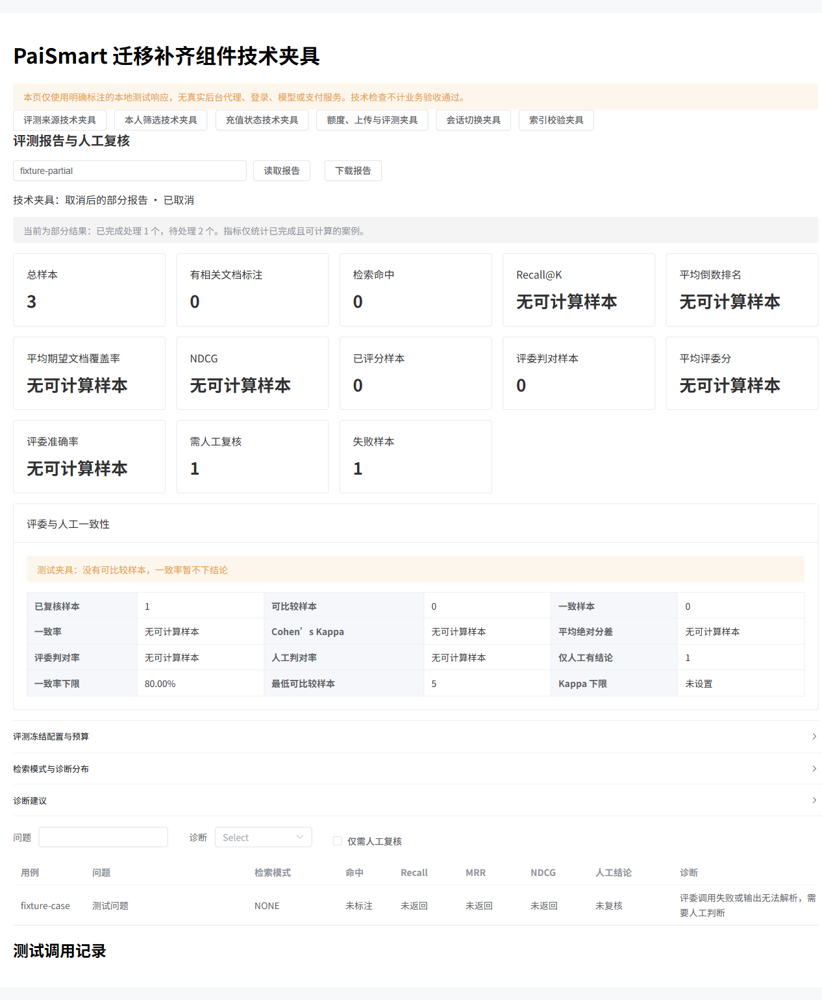
实际截图保存并回读；SHA-256：e61f70c86684f2af1fd49d7224b93627e2dddad1d2afe1f3a250df070bb7d475。详细调用记录见JSON。
此前33项技术基线（沿用）
| 检查 | 实际结果 | 证明范围 |
|---|
| 业务类型检查 | exit 0 | PaiSmart业务Vue/TypeScript类型 |
| 组件及协议测试 | 7个文件，33项通过，0项失败 | 每日额度、7/30日汇总、筛选、长会话尾页和跨会话引用、空评测指标、续传缺片/已合并恢复、安全Markdown/PDF、真实字段适配等本地边界 |
| 生产构建 | exit 0，2分18秒 | 最终CSS、索引详情与会话修正均打包；使用独立outDir，未覆盖共享dist或发布 |
| 稳定新标签页 | 0运行错误，1条弃用警告 | Element Plus提示分页small将弃用；已如实保存。网络记录仅本地静态资源 |
首轮组件夹具曾31通过1失败，原因是el-alert测试替身没有渲染title；修正替身后32基线及33终版均通过。旧浏览器标签在修改夹具配置时出现过HMR连接中断和favicon404，原日志仍保留，未用稳定标签结果覆盖原失败事实。构建提示独立目录在工程之外不会自动清空，这是隔离产物目录的实际配置。
每日额度与管理汇总
本地 DAILY 响应 available=0，limitTokens=100，usedTokens=25，reservedTokens=5，remainingTokens=70；页面显示剩余70。点击管理汇总读取7天，再切换30天；个人快照仍是70。此截图沿用同一组件此前已回读的基线，最后CSS和引用/索引变更不影响计算。
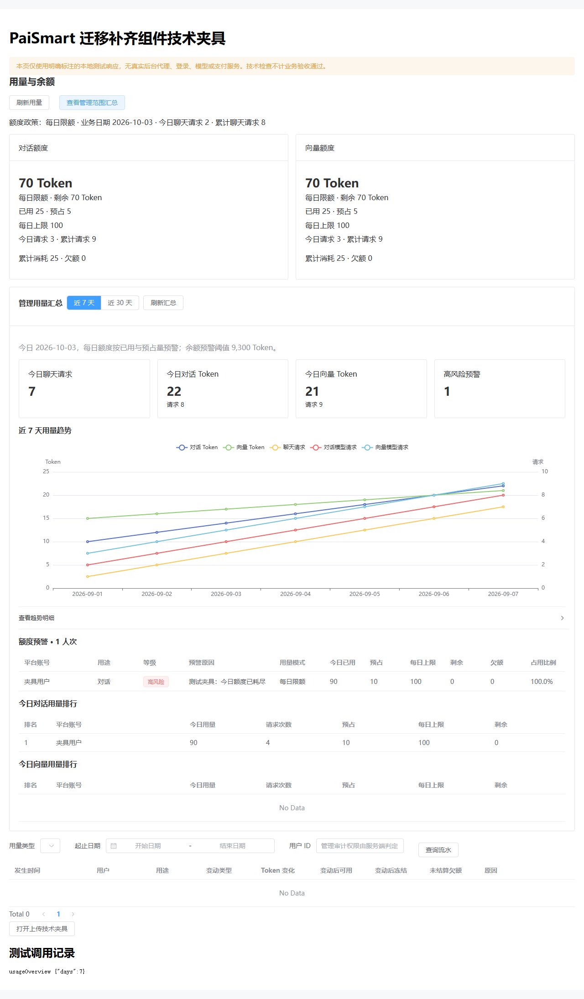
截图已经保存并逐张回读；响应来自明确标注的本地技术夹具。
续传缺片与布局
选择本人未完成记录，重新选择5字节原文件；已完成片0，实际仅补片1的2字节、片2的1字节，再 merge 原 fixture-upload；进度100%，展示原文档。状态筛选框宽度已修正，截图最终回读。
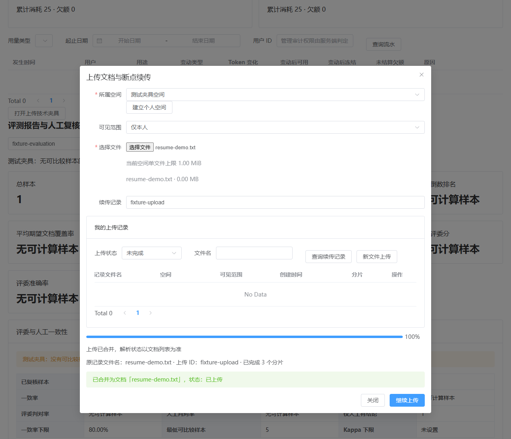
截图已经保存并逐张回读；响应来自明确标注的本地技术夹具。
评测汇总与一致性
响应指标无可计算样本为null，页面显示“无可计算样本”，没有替换成0%；可比较样本0与警告、阈值同时显示。截图沿用当前报告组件已回读的基线。
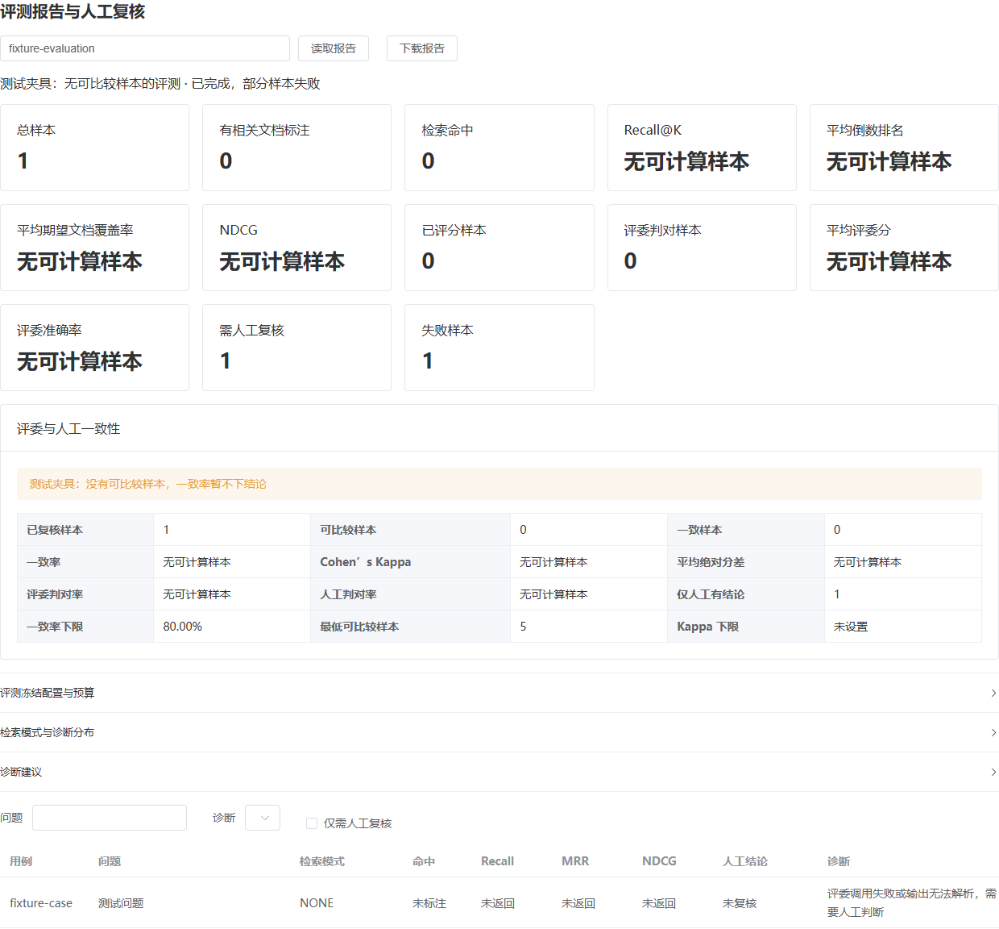
截图已经保存并逐张回读；响应来自明确标注的本地技术夹具。
逐例证据与人工评分
独立参考答案、实际回答、诊断、评委未判定与可选1至5分人工评分可见；未提交人工业务写入。截图沿用当前报告组件已回读的基线。
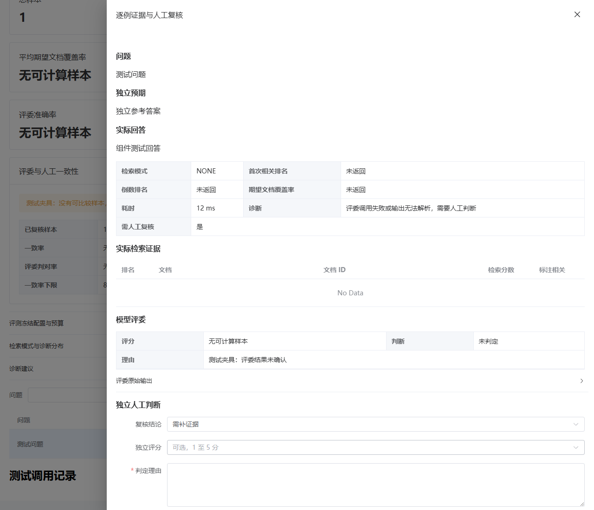
截图已经保存并逐张回读；响应来自明确标注的本地技术夹具。
索引待校验
打开真实组件的待校验详情，呈现来源快照和原始 {state:PENDING}；没有已验证分块数量或查询结果。最终新增项截图已回读。
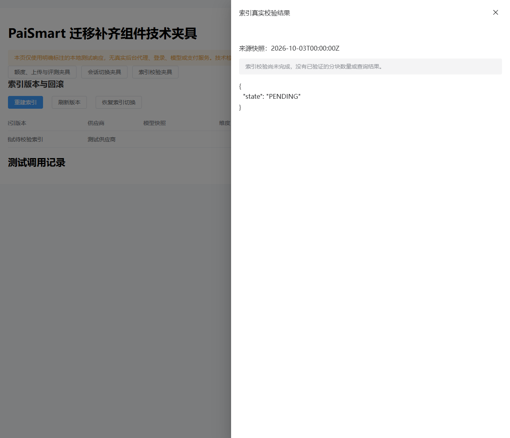
截图已经保存并逐张回读；响应来自明确标注的本地技术夹具。
会话甲引用（已受变更影响的历史图）
打开会话甲，回答与右栏均为夹具引用甲。最终新增项截图已回读。
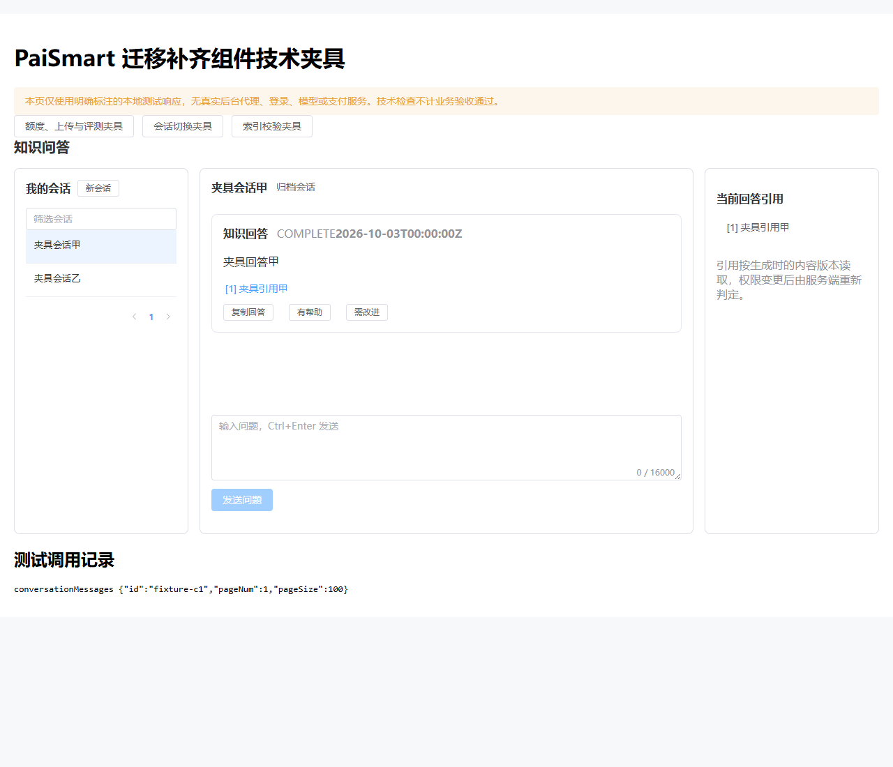
截图已经保存并逐张回读；响应来自明确标注的本地技术夹具。
会话乙引用（已受变更影响的历史图）
切换会话乙，回答与右栏均改为夹具引用乙，不显示甲引用。最终新增项截图已回读。
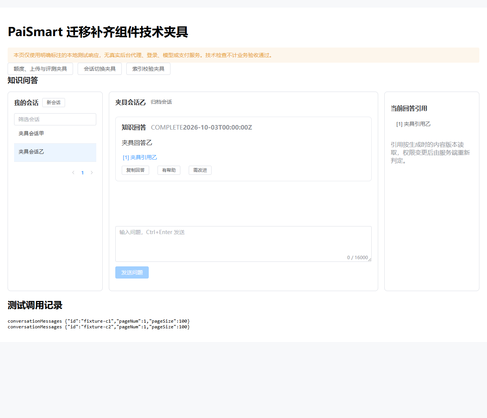
截图已经保存并逐张回读；响应来自明确标注的本地技术夹具。
原始日志与边界
机器结果与截图/源码哈希 · 完整迁移设计与唯一进展记录
截图中配额、用户、文档、索引及评测名称均是测试值，不冒充真实业务。未执行真实聊天、充值、模型/OCR测试、人工复核、索引切换或运维执行；新增本地Mock评测提交与业务写入分开。真实服务条件、业务写入、模型费用和付款链路需依批准验收前提另行核对。
原业务逐页源码核对及修复范围已回传主任务，正式公共契约由主任务同步并静态核对。本报告保存当前技术证据，不建立第二套项目进展。
中间结果与保留记录
56项和59项结果分别属于部分修改完成时的中间检查，不能证明本次最后源码。该前版最终为60项与部分报告终版构建，本轮结果另列在报告开头。旧7图和旧HTML呈现截图沿用原证据，当前HTML增补仅做静态链接核对，没有新开报告服务。
首轮夹具缺少API别名、隐藏控件/required标签定位不符，及个别截图处于动画/加载中；失败日志、原图均保留。随后使用实际可见控件与等待状态补拍稳定图；network旧命令被当前CLI改为requests，旧help输出保留。
此前60项收口核对与清理（历史）
本人paismart-menu-eval浏览器已关闭，18152夹具Vite已停止并确认无监听；未操作主任务18151或其他浏览器、项目服务。18张截图（7张沿用、11张新增）和15份业务源码哈希均已核对，最终构建入口与3个引用资源存在；当前增补HTML只做静态核对，不冒称新报告浏览器呈现。
实际清理记录 · 最终链接、哈希和构建静态核对